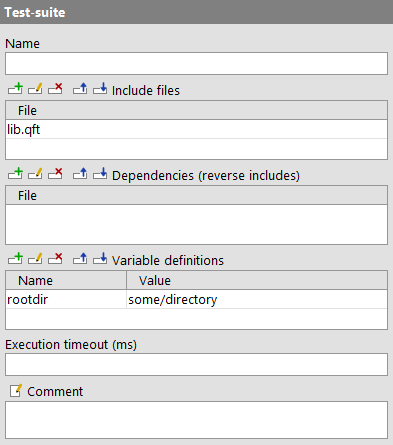

| Version 6.0.3 |
There are more than 60 different kinds of nodes for a test-suite which are all listed in this chapter. Each node type has a unique set of features. The attributes of a node are displayed and edited in the detail view of the editor. The restrictions that apply to each attribute are listed as well as whether it supports variable expansion (see chapter 6).
Additional features of a node include the behavior of the node during execution of a test and the kinds of parent and child nodes allowed.
|
|
The root node of the tree represents the test-suite itself. Its basic structure is fixed. The root node contains an arbitrary number of 'Test-sets' or 'Test-cases', followed by the 'Procedures' the 'Extras' and the 'Windows and components'. When executed, the top-level 'Test-sets' are executed one by one. |
Contained in: None
Children: An arbitrary number of 'Test-set' or 'Test-case' nodes, followed by the 'Procedures', 'Extras' and 'Windows and components' nodes.
Execution: The top-level 'Test-set' nodes are executed one by one.
Attributes:
|
|  | ||
|
| Figure 38.1: 'Test-suite' attributes | ||
A kind of short description for the test-suite. The name is displayed in the tree view, so it should be concise and tell something about the function of the test-suite.
Variable: No
Restrictions: None
This is a list of test-suites that are included by the suite. If a 'Component' or 'Procedure' reference cannot be resolved in the current suite, the included suites are searched for it. When recording new components, QF-Test will search the included suites for a matching 'Component' node before creating a new one.
Relative pathnames are treated relative to the directory of the suite, or to a directory on the library path (see option Directories holding test-suite libraries).
When you change anything in this attribute QF-Test will offer to update all affected nodes to compensate for the change. For example, if you add or remove a suite from the includes, QF-Test will make all references to that suite's 'Procedures' or 'Components' implicit or absolute so that the actual referenced nodes remain unchanged. In such a case, choose "Yes". If, on the other hand, you renamed a suite or moved it to some other directory and are simply updating the includes to reflect that, chose "No" so all former implicit references into the old suite will now point to the new one.
Variable: No
Restrictions: None
This list of test-suites is the reverse of the 'Include files' attribute. It has no impact on test execution. Instead it serves a hint to tell QF-Test which test-suites depend on 'Components' in this suite, either because they (directly or indirectly) include this suite or because they explicitly reference 'Components' in it. This information is used when 'QF-Test IDs' of 'Components' are manipulated (for example after updating components, see (subsection 5.11.2)) and the 'QF-Test component ID' attributes of nodes depending on these components have to be updated. QF-Test always checks all currently loaded suites for dependencies. Additionally, it will automatically load and check all suites listed here.
Relative pathnames are treated relative to the directory of the suite, or to a directory on the library path (see option Directories holding test-suite libraries).
Note Like the 'Include files', the 'Dependencies' are also resolved indirectly. For example if suite A has the dependency B which has the dependency C, both suites B and C will be loaded and checked for references automatically when components in suite A are manipulated.
Variable: No
Restrictions: None
These variables definitions are identical to the suite variable bindings accessible in the Variables pane of the global options. A detailed explanation of variable definition and lookup is given in chapter 6. See subsection 2.2.5 about how to work with the table.
Variable: Variable names no, values yes
Restrictions: None
Time limit for the node's execution in milliseconds. If that limit expires the execution of that node will get interrupted.
Variable: Yes
Restrictions: >= 0
Here you can enter a comment that explains the purpose of this node. This is the preferred way of documenting the test-suite.
Note
For detailed documentation, especially for 'Test-set', 'Test-case' or 'Procedure' nodes,
this text area might not be the right place. There are many excellent editors that are
much better suited to this task. The option External editor command lets you
define an external editor in which comments can be edited conveniently by pressing
[Alt-Return] or by clicking the  button.
button.
You can trigger a special behavior of some nodes using doctags, please see Doctags.
If you enter text in the comment field of a 'Component' node, the node will be considered as 'used' when you want to mark or delete unused components.
Variable: Yes
Restrictions: None
| Last update: 9/6/2022 Copyright © 1999-2022 Quality First Software GmbH |